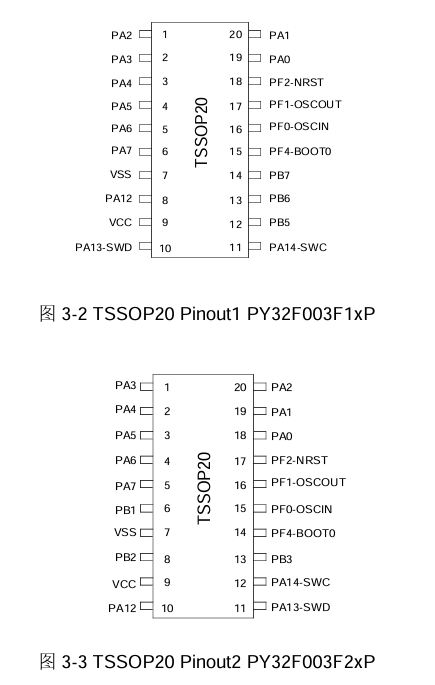
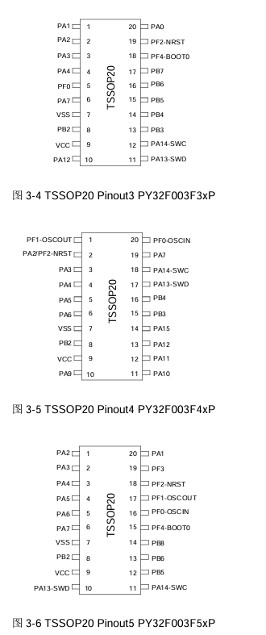
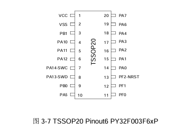

PY32F0系列CMake开发环境配置(PY32F030,PY32F002...)
本文最后更新于 2024年2月8日 下午
PY32F0系列CMake开发环境配置
支持的MCU
—PY32F002B Series—
Puya PY32F002B
Xinlinggo XL32F001*, XL32F002B*
—PY32F0xx Series—
Puya PY32F002A, PY32F003, PY32F030
Xinlinggo XL32F003*, XL32F002A*
Luat AIR001
—PY32F07x Series—(TODO)
Puya PY32F040, PY32F(M)070*, PY32F071, PY32F072
*:通过其特征猜测，并未实际尝试
制作这个工程模版
最近想用py32做一些东西玩玩，原因如下：
Cortex-M0+核心，支持多种编译器和C语言标准，低功耗，支持SWD调试接口，有各种外设和接口。
价格便宜，最便宜的py32才四毛多，原厂py32f030才一块多的价格，而且有XL32等同晶圆的，还能更便宜点。
封装多，tssop20，qfn20，qfn32……都有。
没那么难买，立创商城该有的都有，淘宝也有不少家代理零售。
py32官方提供HAL和LL库，极为先进。
我早就盯上了项目IOsetting/py32f0-template，clone，一看，居然是linux平台下的Makefile…………
于是，我搓了CMake跨平台开发环境，可以在任何平台上使用，能用Vscode，Clion等等IDE。
并将Drivers作为git子模块。
还是借用了IOsetting/py32f0-template项目的ld文件和gcc startup启动文件。，感谢大佬！
国内网上能搜到的几篇py32教程，也都是IOsetting大佬写的。
模板工程链接：https://github.com/decaday/py32f0_cmake_template
文档链接：https://github.com/decaday/PY32_Docs
吐槽
我严重怀疑Puya普冉是开封测厂的，PY32F003一个系列，TSSOP20封装，出了六种Pinout（TB能买到四种），还不算同一晶圆的PY32F002A，030的TSSOP20 pinout（我看了下并不完全重合，但是懒得对比）
然后MSOP10，SOP14，DFN8，SOP8，QFN20，QFN32，TSSOP20，SOP20，SOP16,封装出的一应俱全，，
  